Guia passo a passo, com imagens, para gestores públicos, dirigentes de cooperativas, técnicos de ATER, pesquisadores e estudantes.
Centro de Inteligência Territorial Analítica em CooperativasNovembro de 2026 · protótipo TRL 4
Sumário
1 O que é o CITA-COOP
2 Antes de começar
3 Conhecendo a tela
4 Acessibilidade e VLibras
5 Início
6 Geoportal
7 Sala de Situação
8 Políticas Públicas
9 Demandas
10 ATER Virtual
11 Mercados
12 Gestão Cooperativa
13 Formação
14 Observatório
15 Resultados
16 Administração
17 O que fazer em cada perfil
18 Perguntas frequentes
19 Glossário
20 Limites desta versão
Como ler este manual
Cada capítulo de módulo tem a mesma ordem: para que serve, passo a passo, uma imagem da tela com números em rosa e, no fim, aplicações práticas. Os números em rosa 1 nas imagens correspondem aos números da legenda logo abaixo.
1. O que é o CITA-COOP
O CITA-COOP é uma plataforma na internet que reúne, em um só lugar, informações sobre as cooperativas do Brasil, a agricultura familiar e as políticas públicas. O objetivo é ajudar a decidir onde atuar, o que atender primeiro e onde a política pública ainda não chega.
A plataforma combina três funções:
Função
O que oferece
Módulos
Observatório
Mapa e indicadores das cooperativas por município e estado.
Geoportal, Políticas Públicas, Observatório
Sala de situação
Acompanhamento de clima, vegetação e solo, com alertas.
Sala de Situação
Serviço
Ferramentas para o dia a dia das cooperativas e de quem as apoia.
Demandas, ATER Virtual, Mercados, Gestão, Formação
Para quem é
Gestores públicos: enxergam onde há agricultura familiar sem cooperativa e priorizam ações.
Dirigentes de cooperativas: organizam documentos, avaliam a gestão e encontram mercados.
Técnicos de ATER: recebem as dúvidas que precisam de atendimento humano.
Pesquisadores e estudantes: consultam análises e baixam os dados.
Qualquer pessoa: o mapa e os dados abertos não exigem cadastro.
O que a plataforma já tem
38.658 cooperativas ativas de todo o Brasil, localizadas por município (fonte: Receita Federal, carga de outubro de 2026).
5.572 municípios com o número de estabelecimentos da agricultura familiar (fonte: IBGE, Censo Agropecuário 2017).
Ferramentas de gestão, demandas e orientação que funcionam no próprio navegador.
2. Antes de começar
Como acessar
Abra o navegador de internet (Chrome, Edge, Firefox ou Safari) no computador ou no celular.
Digite o endereço da plataforma informado pela equipe do Centro.
Pronto: não é preciso instalar nada nem criar senha nesta versão.
As três etiquetas de origem
Para que ninguém confunda dado oficial com exemplo, cada bloco da plataforma traz uma etiqueta:
Etiqueta
O que quer dizer
● Dados reais
Informação de fonte oficial, já carregada: Receita Federal e IBGE. Pode ser usada em análises e relatórios, citando a fonte.
Registro local
Informação que você mesmo digitou (uma demanda, um diagnóstico, uma data de documento). Fica guardada apenas no navegador que você está usando.
Demonstração
Exemplo ilustrativo. Aparece onde a fonte oficial ainda depende de convênio, como os dados de clima por satélite.
Importante sobre o “Registro local”
Nesta versão, o que você registra não é enviado a um servidor. Se você trocar de computador, de navegador ou limpar os dados de navegação, esses registros não aparecerão. A gravação em banco de dados central é a próxima etapa do projeto.
Perfis de uso
No alto da tela existe o seletor Perfil. Ao escolher um perfil, o menu passa a mostrar apenas os módulos úteis para ele. Nesta versão a troca é livre, para demonstração; o acesso com login virá na próxima etapa.
Todas as telas têm a mesma organização. Aprendendo uma, você sabe usar todas.
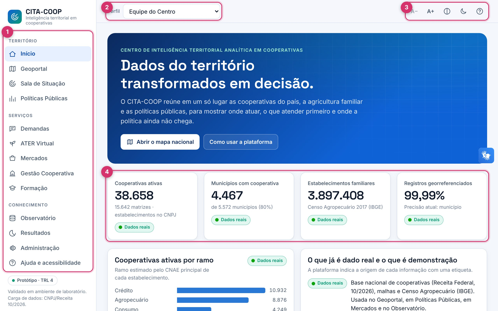
Figura 1 — Tela inicial e as cinco áreas presentes em toda a plataforma.
1Menu: os módulos, em três grupos (Território, Serviços, Conhecimento).
2Perfil: escolha como você usa a plataforma.
3Acessibilidade: tamanho do texto, alto contraste, tema escuro e ajuda.
4Conteúdo: a área de trabalho do módulo aberto.
5VLibras: botão azul que traduz o texto para Libras.
No celular
A plataforma se ajusta à tela pequena. O menu fica recolhido: toque no botão ☰, no canto superior esquerdo, para abri-lo.
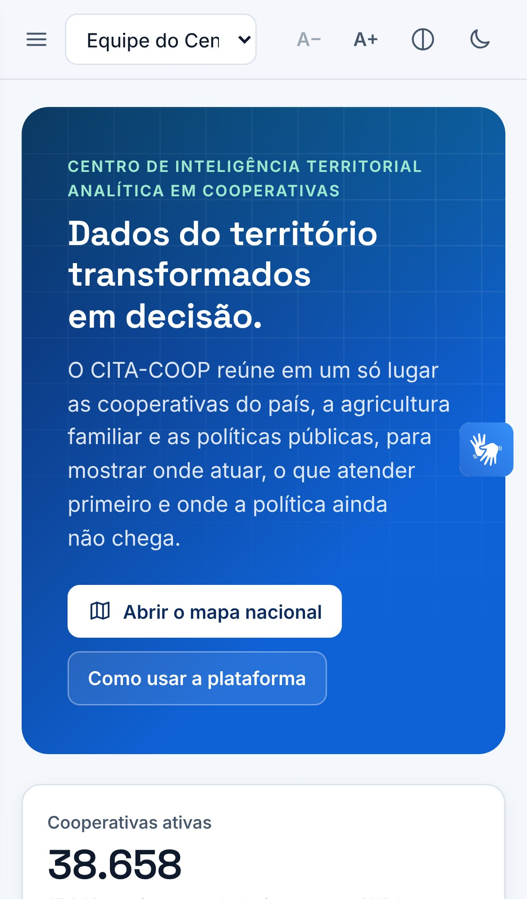
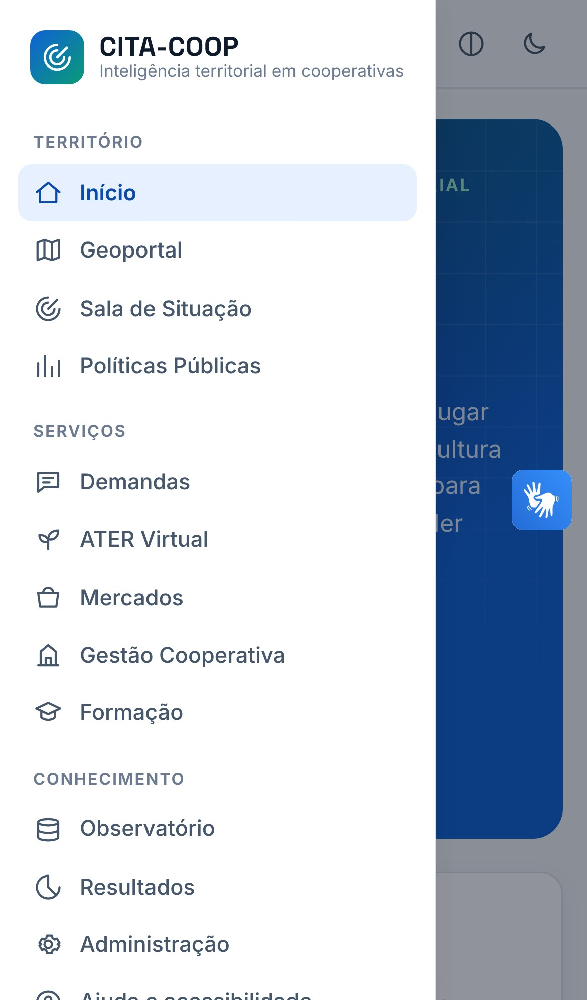
Figura 2 — Tela inicial no celular e o menu aberto.
4. Acessibilidade e VLibras
A plataforma foi feita para ser usada por todas as pessoas. Os recursos ficam sempre no alto da tela e no botão azul do VLibras.
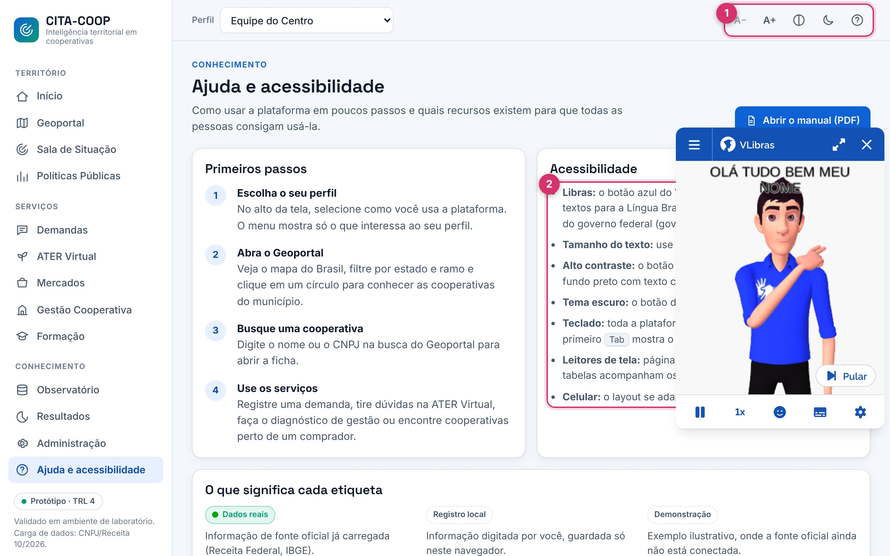
Figura 3 — VLibras aberto: o intérprete virtual sinaliza em Libras o texto selecionado.
1Botões de acessibilidade: A−, A+, contraste, tema e ajuda.
2Lista de recursos, na tela Ajuda e acessibilidade.
Usar o VLibras (tradução para Libras)
Clique no botão azul com as mãos, na lateral direita da tela.
Aguarde o intérprete virtual carregar (é preciso estar conectado à internet).
Clique em qualquer texto da plataforma: o intérprete faz a tradução para a Língua Brasileira de Sinais.
Use os botões da janela para pausar, mudar a velocidade ou trocar o avatar. Para fechar, clique no X.
O que é o VLibrasO VLibras é a ferramenta oficial e gratuita do governo federal (gov.br) para tradução automática do português para Libras. A plataforma usa o componente oficial, carregado diretamente de vlibras.gov.br.
Outros recursos
Recurso
Como usar
Texto maior ou menor
Clique em A+ para aumentar (dois níveis) e em A− para voltar.
Alto contraste
Clique no botão do círculo dividido. A tela passa a fundo preto, texto branco e destaques em amarelo.
Tema escuro
Clique no botão da lua. Clique no sol para voltar ao tema claro.
Uso só com o teclado
Use Tab para avançar, Shift+Tab para voltar e Enter para acionar. O primeiro Tab mostra o atalho “Pular para o conteúdo”. Esc fecha janelas.
Leitor de tela
As telas têm títulos, rótulos e descrições. Gráficos e mapa vêm acompanhados de tabelas ou listas com os mesmos dados.
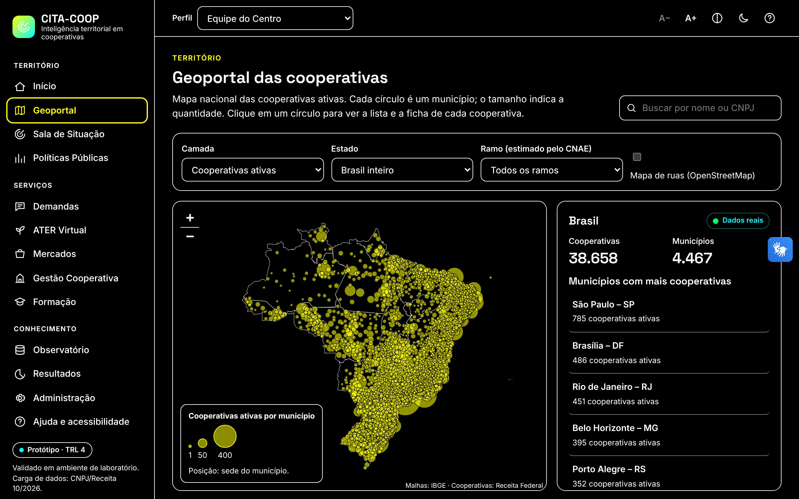
Figura 4 — Geoportal no modo de alto contraste.
As preferências de tamanho de texto, contraste e tema ficam guardadas: na próxima visita, a plataforma abre do jeito que você deixou.
5. Início
Para que serve
É a porta de entrada. Mostra os números principais da base e dá acesso a todos os módulos do seu perfil.
O que você encontra
Quatro indicadores: cooperativas ativas, municípios com cooperativa, estabelecimentos da agricultura familiar e percentual de registros localizados no mapa.
Cooperativas por ramo: gráfico de barras com os oito ramos.
Origem das informações: explicação das três etiquetas.
Módulos: um cartão para cada módulo, com uma frase que explica para que serve. Clique no cartão para abrir.
Aplicações práticas
Apresentar o projeto em reuniões: os números da primeira tela resumem a cobertura da base.
Orientar quem está começando: os cartões funcionam como um índice da plataforma.
6. Geoportal
Para que serve
É o mapa nacional das cooperativas. Responde a perguntas como: quantas cooperativas existem no meu município?, quais são?, onde há agricultura familiar sem cooperativa por perto?
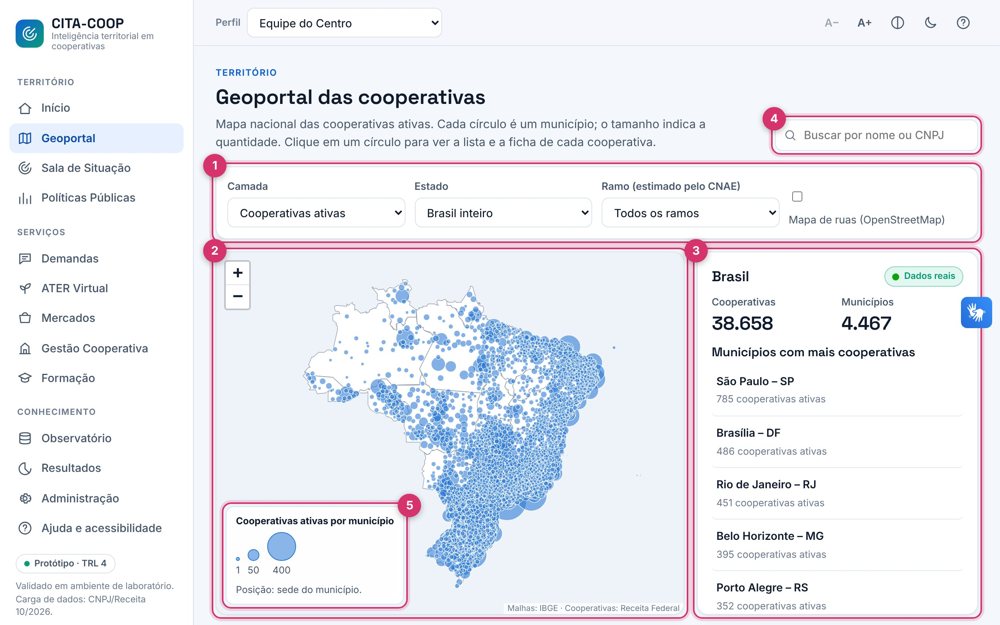
Figura 5 — Geoportal: visão do Brasil inteiro.
1Filtros: camada, estado e ramo.
2Mapa: cada círculo é um município.
3Painel: totais e lista dos municípios.
4Busca: por nome ou CNPJ.
5Legenda: tamanho dos círculos.
Passo a passo: ver as cooperativas de um município
No menu, clique em Geoportal.
Em Estado, escolha a sigla (por exemplo, GO). O mapa aproxima e o painel passa a mostrar os totais do estado.
Se quiser, escolha um Ramo (Agropecuário, Crédito, Saúde…).
Clique em um círculo do mapa ou em um município da lista, no painel.
O painel mostra os números do município e a lista das cooperativas. Clique em uma delas para abrir a ficha.
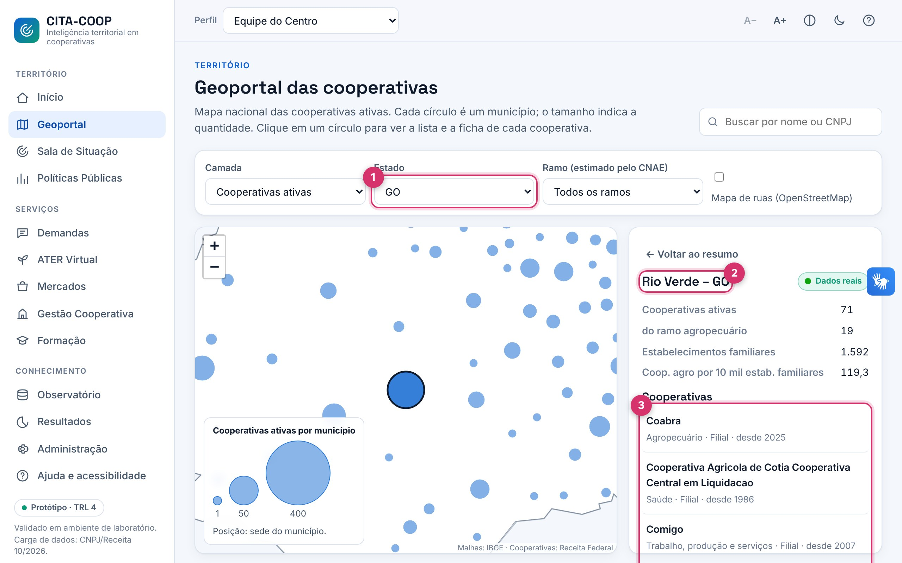
Figura 6 — Estado de Goiás filtrado e o município de Rio Verde selecionado.
1Filtro de estado.
2Município escolhido e seus números.
3Cooperativas com sede no município.
A ficha da cooperativa
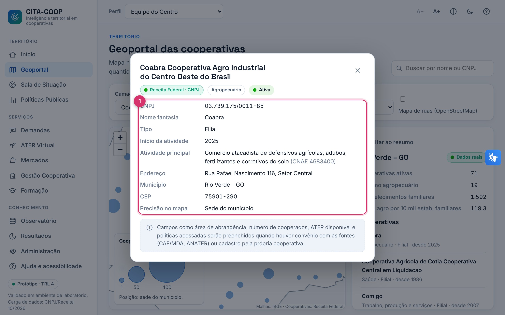
Figura 7 — Ficha com os dados públicos do CNPJ. 1 CNPJ, tipo, início da atividade, atividade principal (CNAE), endereço e município.
Para fechar a ficha, clique no X, clique fora da janela ou aperte Esc.
Passo a passo: buscar uma cooperativa pelo nome
Clique na caixa Buscar por nome ou CNPJ.
Digite pelo menos três letras do nome, ou os números do CNPJ.
Escolha a cooperativa na lista que aparece. O mapa vai até o município e a ficha se abre.
Camada “Vazios de atendimento”
Mostra os municípios que têm muitos estabelecimentos da agricultura familiar e nenhuma cooperativa agropecuária ativa com sede no local.
Em Camada, escolha Vazios de atendimento. Os círculos ficam alaranjados.
Arraste o controle Mínimo de estabelecimentos familiares para definir a partir de quantos estabelecimentos um município entra na lista.
O painel mostra os maiores vazios, do maior para o menor.
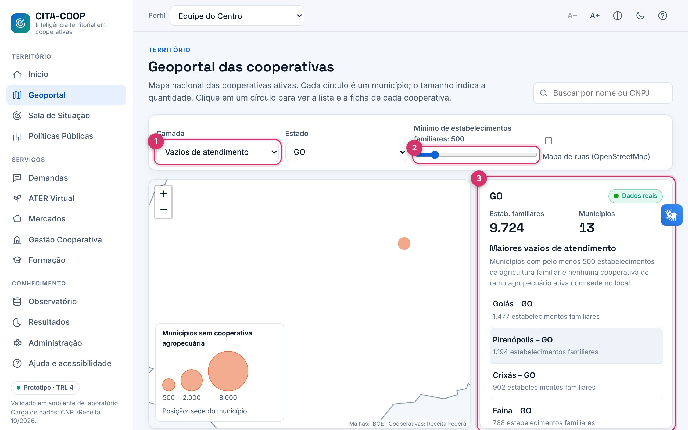
Figura 8 — Vazios de atendimento em Goiás. 1 camada · 2 limite mínimo · 3 lista ordenada.
Dicas
Use os botões + e − do mapa, ou a roda do mouse, para aproximar e afastar.
A caixa Mapa de ruas (OpenStreetMap) acrescenta ruas e cidades ao fundo (precisa de internet).
Passe o mouse sobre um círculo para ver o nome do município e a quantidade.
Como ler o mapa com cuidado
A base traz todas as cooperativas ativas, de todos os ramos. O recorte da agricultura familiar depende do cadastro CAF Jurídico, do MDA, ainda não integrado.
O círculo fica na sede do município, não no endereço da cooperativa.
O ramo é estimado pela atividade principal (CNAE) registrada na Receita Federal.
Aplicações práticas
Gestor municipal: listar as cooperativas do município antes de lançar uma chamada pública.
Gestor estadual ou federal: identificar regiões com agricultura familiar e sem cooperativa para orientar fomento e ATER.
Pesquisador: localizar cooperativas de um ramo em uma região para estudo de campo.
Cooperativa: conhecer as cooperativas vizinhas para parcerias e intercooperação.
7. Sala de Situação
Para que serve
Acompanhar sinais de clima, vegetação e solo por território e avisar quando uma combinação desses sinais indica risco para as cooperativas, como uma seca agrícola.
Tela em demonstraçãoOs territórios e os valores desta tela são ilustrativos. O que já funciona de verdade é o motor de alertas: as regras que você ajusta mudam os alertas na hora. A ligação com os dados de satélite é a próxima etapa.
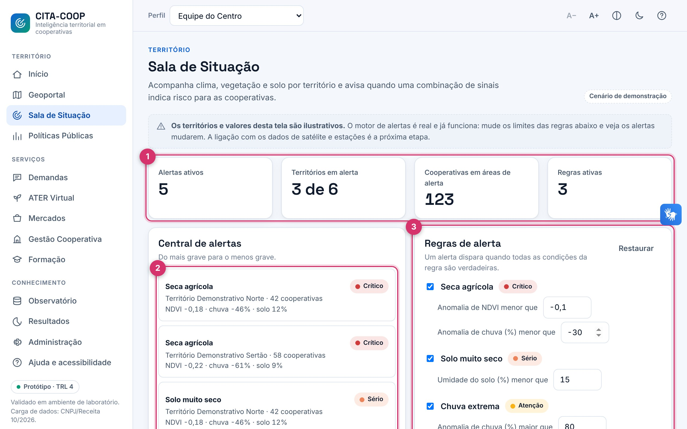
Figura 9 — Sala de Situação.
1Resumo: alertas, territórios e cooperativas afetadas.
2Central de alertas, do mais grave ao menos grave.
3Regras: ligue, desligue e mude os limites.
Passo a passo: ajustar uma regra de alerta
Em Regras de alerta, localize a regra (por exemplo, Seca agrícola).
Mude o número do limite. Exemplo: anomalia de chuva menor que −40 em vez de −30.
Veja a Central de alertas e a tabela Situação por território se atualizarem.
Para desligar uma regra, desmarque a caixa ao lado do nome. Para voltar ao padrão, clique em Restaurar.
Uma regra dispara quando todas as suas condições são verdadeiras. A regra de seca agrícola, por exemplo, exige vegetação abaixo do normal e chuva abaixo do normal ao mesmo tempo.
Aplicações práticas (quando os dados reais estiverem conectados)
Defesa Civil e gestores: lista de municípios e cooperativas em área de seca para ações de emergência e Garantia-Safra.
Técnico de ATER: priorizar visitas nas áreas em alerta.
Cooperativa: antecipar decisões de plantio, colheita e armazenagem.
8. Políticas Públicas
Para que serve
Mostrar onde está a agricultura familiar, onde há cooperativas para atendê-la e quanto das políticas públicas chega a cada território. O módulo tem três abas.
Aba 1 — Presença cooperativa
Compara os estados pelo número de cooperativas agropecuárias para cada 10 mil estabelecimentos da agricultura familiar.
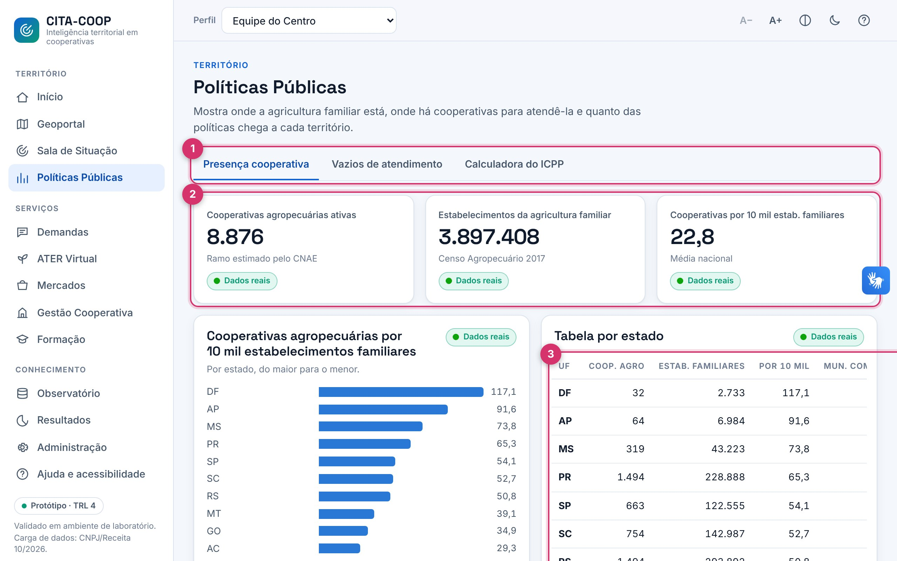
Figura 10 — Presença cooperativa. 1 abas · 2 números do Brasil · 3 tabela por estado.
Aba 2 — Vazios de atendimento
É a fila de prioridades: municípios com muitos estabelecimentos familiares e nenhuma cooperativa agropecuária com sede no local.
Clique na aba Vazios de atendimento.
Ajuste o mínimo de estabelecimentos familiares e, se quiser, escolha um estado.
Leia a fila, que vem ordenada do maior vazio para o menor.
Clique em Baixar lista (CSV) para abrir a lista completa em uma planilha.
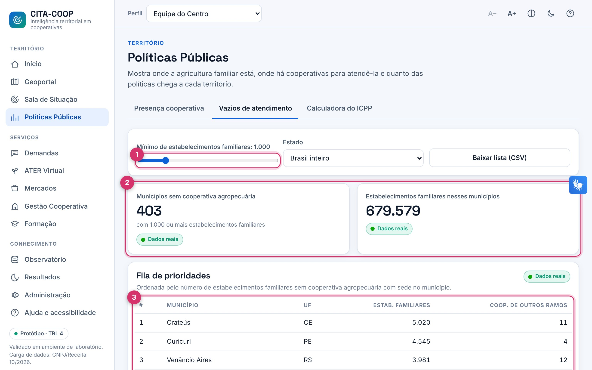
Figura 11 — Vazios de atendimento. 1 limite mínimo · 2 totais · 3 fila de prioridades.
Aba 3 — Calculadora do ICPP
O ICPP (Índice de Cobertura de Políticas Públicas) vai de 0 a 1 e resume seis componentes: Cadastro (CAF), Crédito (Pronaf), ATER, PNAE, PAA e Proteção (Garantia-Safra e SEAF). Quanto mais perto de 1, maior a cobertura.
Clique na aba Calculadora do ICPP.
Digite o nome do município e escolha-o na lista. A plataforma traz o número de estabelecimentos familiares (IBGE).
Preencha os valores de cada política no município. Para conhecer a ferramenta, use Preencher com valores de exemplo.
Veja o resultado e a barra de cada componente.
Se quiser, mude os pesos para dar mais importância a uma política.
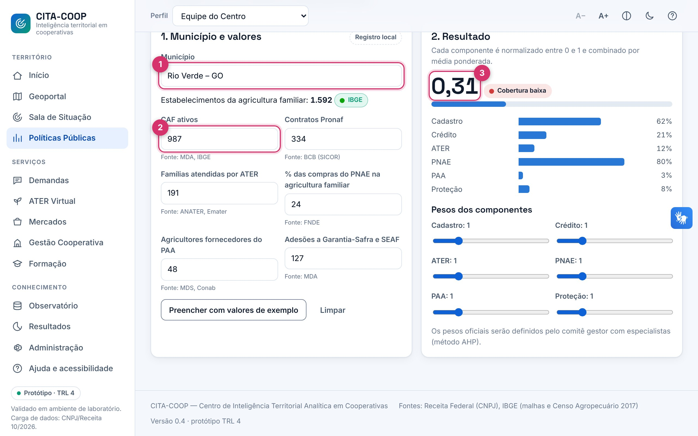
Figura 12 — Calculadora do ICPP. 1 município · 2 valores informados · 3 índice calculado.
Como o índice é calculado
Cada componente = valor informado ÷ estabelecimentos familiares (limitado a 1). O PNAE = percentual de compras ÷ meta legal. O ICPP é a média dos seis componentes, ponderada pelos pesos.
Faixa
Leitura
0,70 ou mais
Cobertura alta
0,40 a 0,69
Cobertura média
abaixo de 0,40
Cobertura baixa
Por que os valores são digitadosO denominador (estabelecimentos familiares) já é oficial. Os numeradores dependem de convênios com MDA, Banco Central, FNDE e ANATER. Quando essas fontes forem integradas, o índice será calculado automaticamente para todos os municípios.
Aplicações práticas
Gestor público: usar a fila de vazios para escolher onde lançar editais de ATER ou de fomento ao cooperativismo.
Secretaria municipal: calcular o ICPP do município com os próprios números e identificar a política mais fraca.
Pesquisador: comparar estados pela densidade de cooperativas e baixar a lista para análise.
9. Demandas
Para que serve
Registrar as dores e necessidades das cooperativas, identificar o tema de cada uma, sugerir para quem encaminhar e acompanhar até a solução.
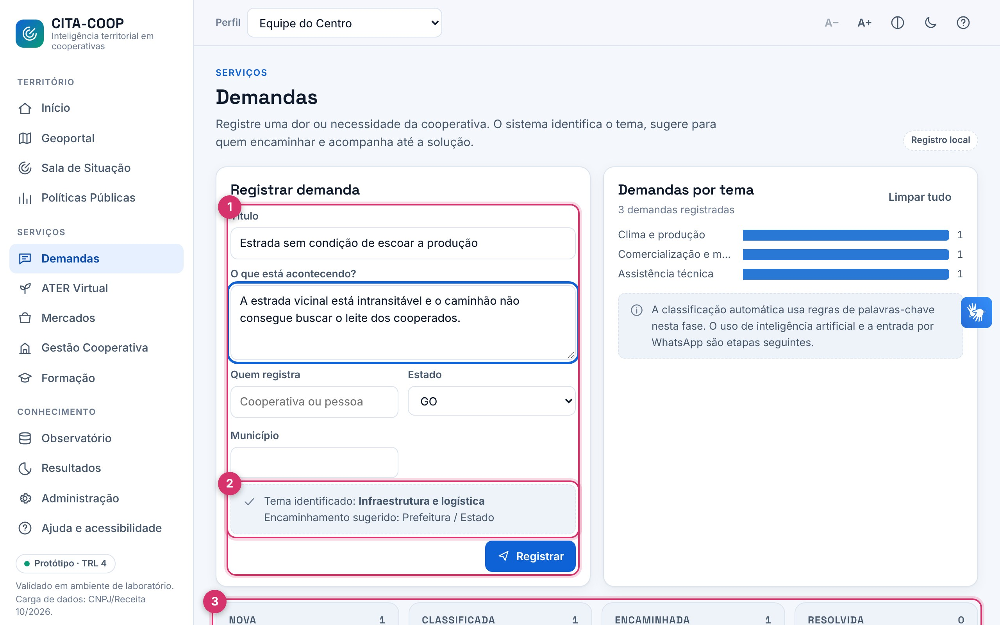
Figura 13 — Demandas.
1Formulário de registro.
2Tema identificado e encaminhamento sugerido.
3Quadro de acompanhamento, em quatro etapas.
Passo a passo: registrar uma demanda
Escreva um título curto.
Em O que está acontecendo?, descreva a situação com suas palavras.
Enquanto você escreve, a plataforma mostra o tema identificado e o encaminhamento sugerido. Se o texto tiver palavras como “urgente”, a demanda recebe prioridade alta.
Informe quem registra, o estado e o município.
Clique em Registrar. A demanda aparece na coluna Classificada.
Passo a passo: acompanhar no quadro
Localize o cartão da demanda no quadro.
Clique em Avançar → para levá-la à etapa seguinte: Nova → Classificada → Encaminhada → Resolvida.
Se precisar, clique em ← Voltar.
Tema
Encaminhamento sugerido
Clima e produção
Defesa Civil e ATER local
Crédito e financiamento
Agente financeiro / Pronaf
Comercialização e mercados
Núcleo de Mercados
Documentação e regularidade; Gestão
Núcleo de Assessoria em Gestão
Assistência técnica
Escritório de ATER
Infraestrutura e logística
Prefeitura / Estado
DicaOs três cartões com a etiqueta Exemplo servem para mostrar como o quadro funciona. Use Limpar tudo para começar do zero.
Aplicações práticas
Cooperativa: registrar um problema e saber a quem recorrer.
Equipe do Centro e ATER: organizar o atendimento por etapa.
Gestor público: ver quais temas mais aparecem, pelo gráfico Demandas por tema.
10. ATER Virtual
Para que serve
Dar orientação rápida a cooperados e dirigentes. O assistente responde com base em um conjunto de temas revisados e sempre indica a fonte. O que ele não sabe responder vai para a fila do técnico.
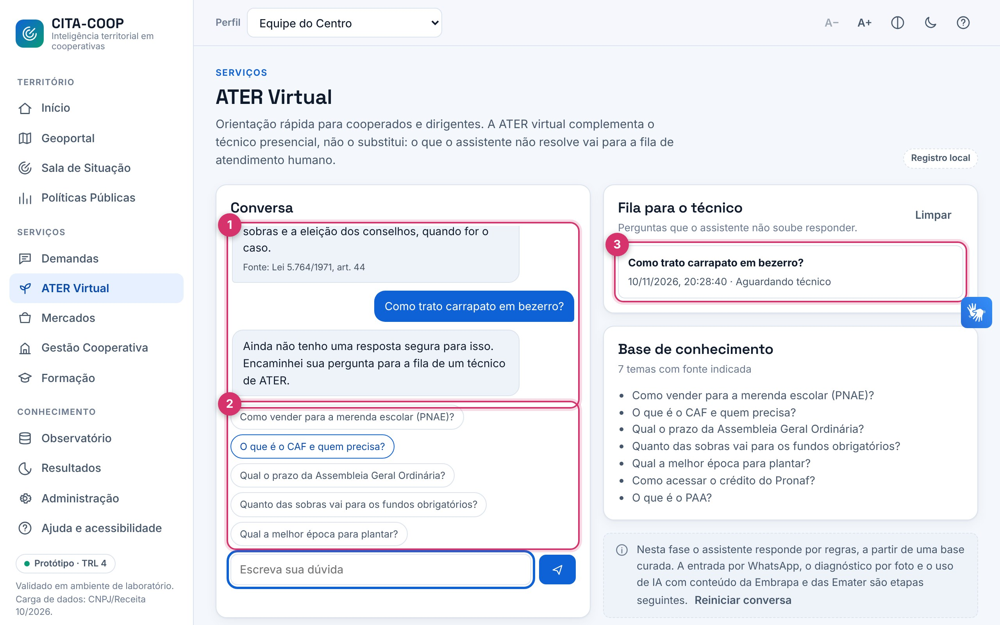
Figura 14 — ATER Virtual.
1Conversa, com a fonte de cada resposta.
2Perguntas prontas: clique para perguntar.
3Fila para o técnico.
Passo a passo
Clique em uma das perguntas prontas ou escreva a sua dúvida na caixa.
Aperte Enter ou clique no botão de enviar.
Leia a resposta e confira a fonte indicada abaixo dela.
Se o assistente não souber, ele avisa e coloca a pergunta na Fila para o técnico.
Temas disponíveis nesta versão: PNAE, CAF, prazo da Assembleia Geral, fundos obrigatórios, época de plantio (ZARC), Pronaf e PAA.
A ATER virtual complementa, não substituiO atendimento do técnico presencial continua essencial. O assistente resolve dúvidas simples e libera o técnico para os casos que exigem visita.
Aplicações práticas
Cooperado ou dirigente: tirar uma dúvida fora do horário de atendimento.
Técnico de ATER: receber, organizadas, as perguntas que precisam de resposta humana.
11. Mercados
Para que serve
Aproximar quem compra de quem produz. O módulo encontra as cooperativas agropecuárias perto de um município comprador e guarda as chamadas públicas do PNAE e do PAA.
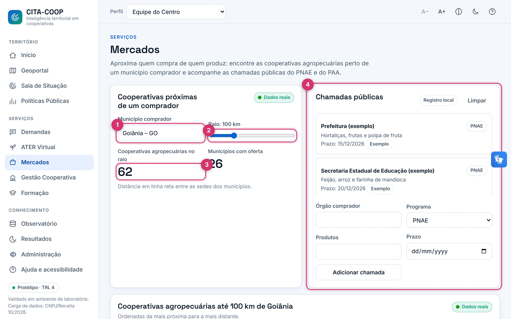
Figura 15 — Mercados.
1Município comprador.
2Raio de busca, em quilômetros.
3Cooperativas encontradas no raio.
4Chamadas públicas cadastradas.
Passo a passo: encontrar cooperativas perto de um comprador
Em Município comprador, digite o nome e escolha na lista.
Arraste o controle do raio (de 25 a 300 km).
Veja o total e, abaixo, a tabela com cada cooperativa, o município e a distância.
Passo a passo: cadastrar uma chamada pública
Em Chamadas públicas, preencha o órgão comprador, o programa, os produtos e o prazo.
Clique em Adicionar chamada.
Sobre a distânciaA distância é medida em linha reta entre as sedes dos municípios. Por estrada, o percurso é maior.
Aplicações práticas
Prefeitura ou secretaria de educação: descobrir quais cooperativas podem fornecer para a alimentação escolar e convidá-las para a chamada pública.
Cooperativa: acompanhar prazos de chamadas e identificar compradores próximos.
Gestor estadual: avaliar se há oferta cooperativa suficiente em uma região.
12. Gestão Cooperativa
Para que serve
Ajudar a cooperativa a se conhecer e se organizar. No campo Cooperativa em análise, escreva o nome da cooperativa. O módulo tem quatro abas.
Aba 1 — Diagnóstico IMGC
O IMGC (Índice de Maturidade de Gestão Cooperativa) é um questionário de 21 perguntas, em sete dimensões: Governança, Finanças, Contabilidade, Conformidade, Comercialização, Pessoas e Produção.
Para cada pergunta, escolha uma resposta: Não existe, Inicial, Parcial, Implantado ou Consolidado.
Acompanhe a barra de progresso no alto do questionário.
Veja, à direita, a nota de 0 a 100, o nível de maturidade e o gráfico com as sete dimensões.
Leia a frase que indica as duas dimensões que pedem mais atenção.
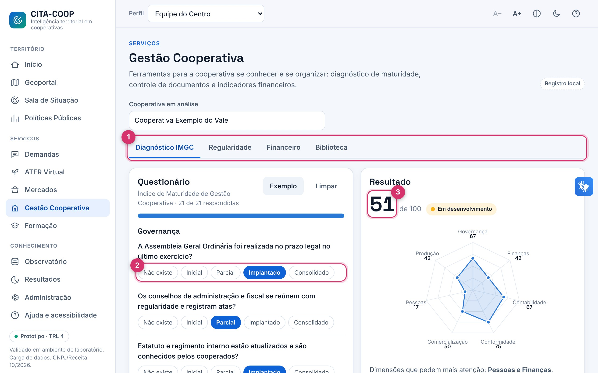
Figura 16 — Diagnóstico IMGC. 1 abas · 2 escala de resposta · 3 nota e nível.
Nota
Nível de maturidade
75 a 100
Consolidada
50 a 74
Em desenvolvimento
25 a 49
Inicial
0 a 24
Crítica
Aba 2 — Regularidade
Um semáforo dos documentos que a cooperativa precisa manter em dia para vender ao poder público.
Clique na aba Regularidade.
Informe a data de validade de cada documento.
Leia a situação: verde (em dia), amarelo (vence em até 30 dias) ou vermelho (vencido).
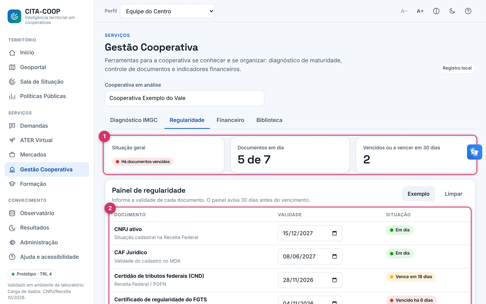
Figura 17 — Regularidade. 1 situação geral · 2 documentos e validade.
Documentos acompanhados: CNPJ, CAF Jurídico, certidão de tributos federais, regularidade do FGTS, certidão trabalhista, Assembleia Geral Ordinária e mandato da diretoria.
Aba 3 — Financeiro
Clique na aba Financeiro.
Preencha os valores do exercício: receitas, custos, despesas, ativos e passivos.
Veja os indicadores (sobras, margem, liquidez, endividamento e capital de giro), cada um com uma leitura em cores.
Veja a destinação das sobras: Fundo de Reserva, FATES e o valor à disposição da assembleia.
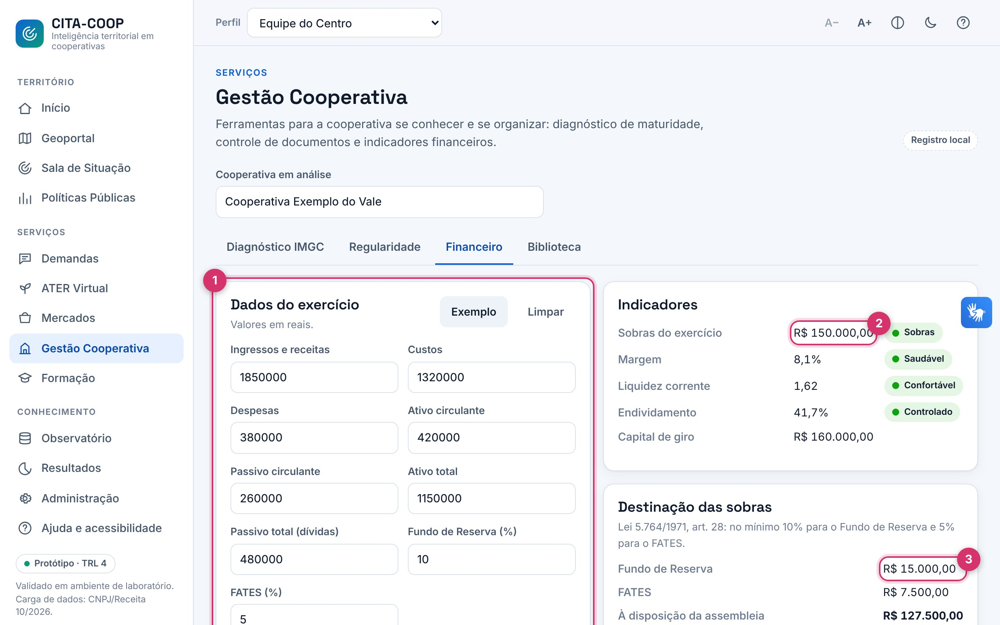
Figura 18 — Financeiro. 1 dados do exercício · 2 sobras · 3 Fundo de Reserva.
Regra dos fundosA Lei 5.764/1971 (art. 28) exige no mínimo 10% das sobras para o Fundo de Reserva e 5% para o FATES. Se você digitar percentuais menores, a plataforma aplica os mínimos legais. O estatuto pode fixar percentuais maiores.
Aba 4 — Biblioteca
Lista os modelos de documentos (atas, estatuto, planilhas, projeto de venda) que estão sendo elaborados pelo Núcleo de Assessoria.
Aplicações práticas
Dirigente: preparar a cooperativa antes de uma chamada pública, conferindo os documentos.
Conselho fiscal: conferir a destinação das sobras antes da assembleia.
Analista do Núcleo: aplicar o IMGC no início e no fim da assessoria para medir a evolução.
Gestor de programa: usar o IMGC para separar “a política não chega” de “a cooperativa não consegue acessar”.
13. Formação
Para que serve
Apresentar as trilhas de capacitação a distância para dirigentes e conselheiros, com certificação prevista pelo IF Goiano.
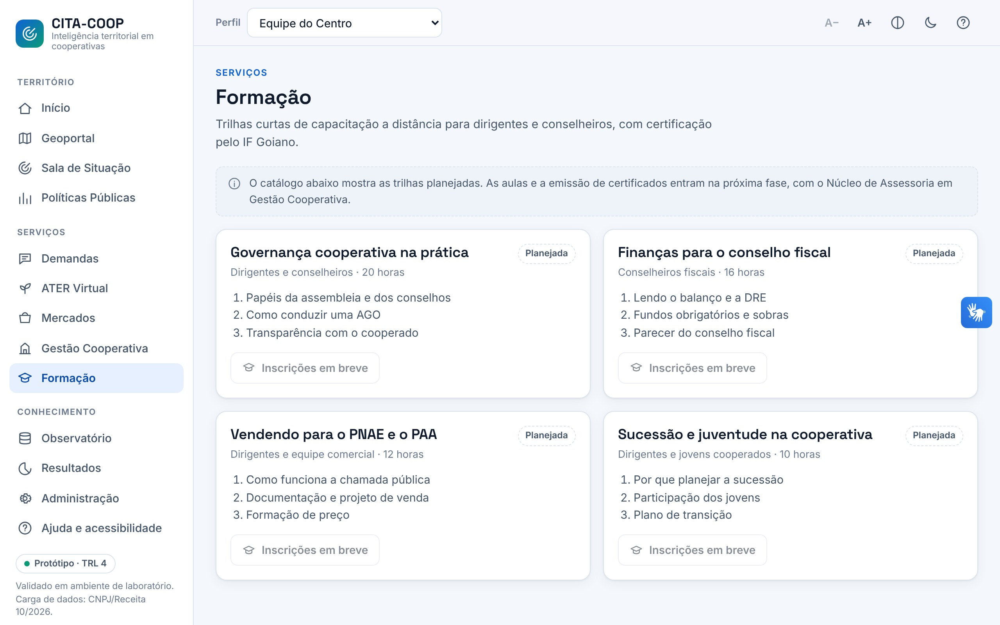
Figura 19 — Catálogo das trilhas planejadas.
Nesta versão o módulo mostra o catálogo: nome da trilha, público, carga horária e conteúdos. As aulas e as inscrições entram na próxima etapa.
Trilha
Público
Carga
Governança cooperativa na prática
Dirigentes e conselheiros
20 h
Finanças para o conselho fiscal
Conselheiros fiscais
16 h
Vendendo para o PNAE e o PAA
Dirigentes e equipe comercial
12 h
Sucessão e juventude na cooperativa
Dirigentes e jovens cooperados
10 h
14. Observatório
Para que serve
É o espaço de análises, dados abertos e fichas técnicas. Foi pensado para pesquisadores, estudantes e gestores. Tem três abas.
Aba 1 — Demografia das cooperativas
Mostra como as cooperativas nascem e se encerram ao longo do tempo.
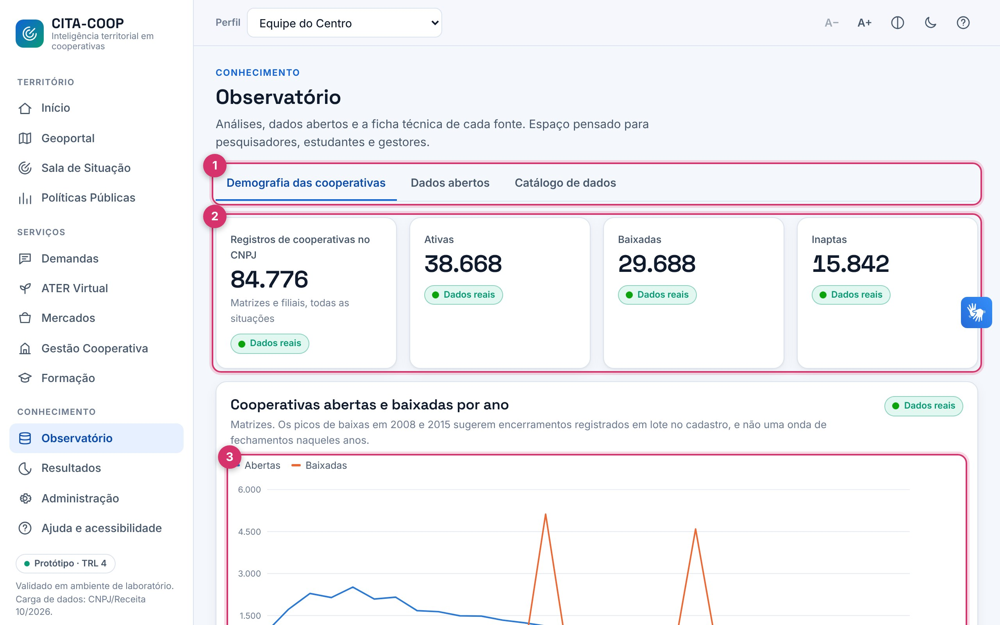
Figura 20 — Demografia. 1 abas · 2 situação dos registros · 3 aberturas e baixas por ano.
Abertas e baixadas por ano: passe o mouse sobre o gráfico para ver os valores de cada ano.
Quantas continuam ativas: percentual de cooperativas ainda ativas, por período de abertura.
Por ramo e por estado: gráficos e tabela com o percentual de ativas.
Aba 2 — Dados abertos
Clique na aba Dados abertos.
Leia a descrição de cada arquivo.
Clique no botão com o tamanho do arquivo para baixar.
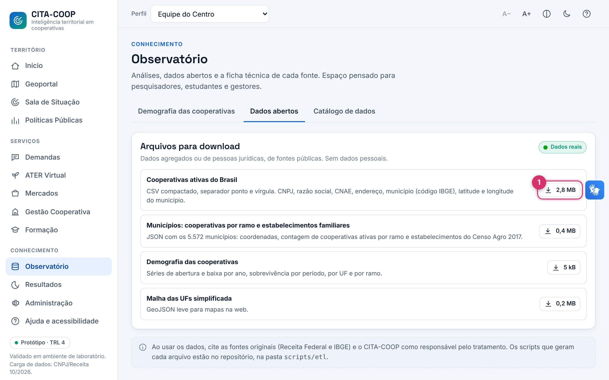
Figura 21 — Dados abertos. 1 botão de download.
Aba 3 — Catálogo de dados
Cada fonte tem uma ficha com: forma de acesso, atualização, cobertura, linhagem (o caminho do dado desde a origem até a tela) e limitações. Clique no nome da fonte para abrir a ficha.
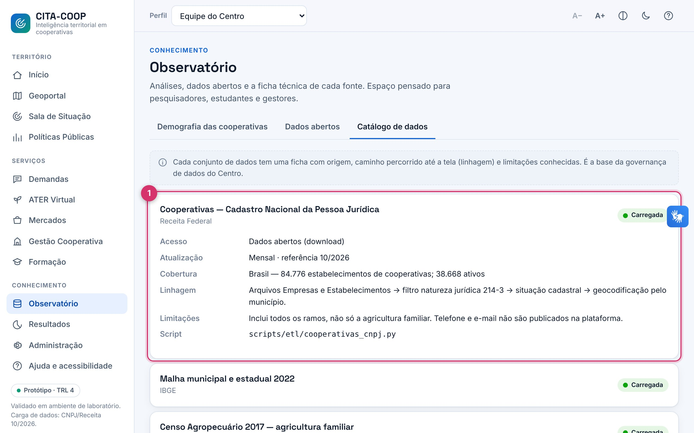
Figura 22 — Catálogo de dados. 1 ficha aberta de uma fonte.
Aplicações práticas
Pesquisador: baixar a base de cooperativas para dissertações e artigos; citar a fonte com base na ficha do catálogo.
Estudante: usar os gráficos em trabalhos sobre cooperativismo.
Gestor de dados: verificar a origem e as limitações de cada informação antes de usá-la em relatório oficial.
15. Resultados
Para que serve
Reunir os nove indicadores de resultado do projeto e mostrar o valor atual de cada um, com a origem.
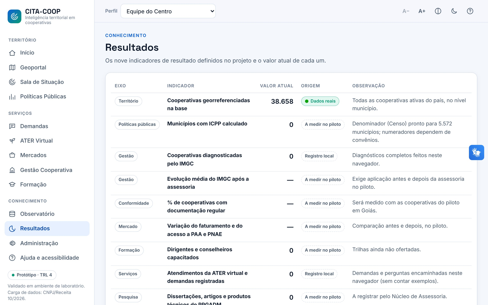
Figura 23 — Indicadores de resultado.
Nesta fase, o indicador de território (cooperativas georreferenciadas) já tem valor consolidado. Os demais aparecem como A medir no piloto, porque dependem do uso da plataforma pelas cooperativas.
16. Administração
Para que serve
Área da equipe do Centro. Aparece no menu apenas no perfil Equipe do Centro.
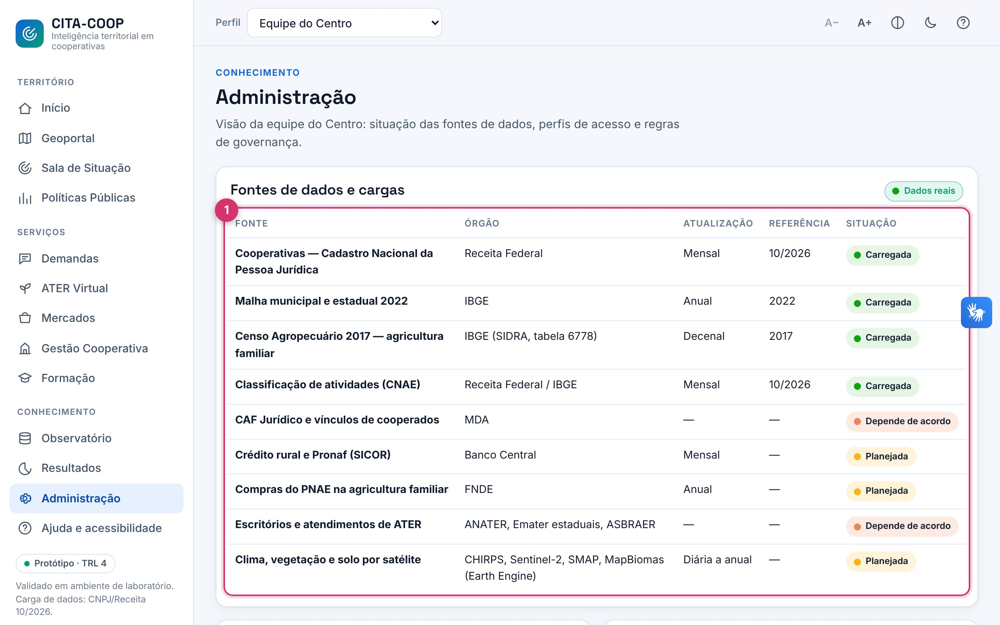
Figura 24 — Administração. 1 situação de cada fonte de dados.
Fontes de dados e cargas: quais fontes estão carregadas, planejadas ou dependem de acordo.
Perfis e menus: o que cada perfil enxerga.
Governança e LGPD: regras de proteção de dados adotadas.
Apagar registros locais: remove deste navegador tudo o que foi digitado (demandas, diagnósticos, datas).
17. O que fazer em cada perfil
Se você é…
Comece por aqui
Resultado
Gestor público municipal
Geoportal → seu estado → seu município. Depois, Mercados → seu município como comprador.
Lista das cooperativas locais e vizinhas para compras públicas.
Gestor estadual ou federal
Políticas Públicas → Vazios de atendimento → baixar CSV.
Fila de municípios prioritários para fomento e ATER.
Dirigente de cooperativa
Gestão → Regularidade e Diagnóstico IMGC. Depois, Mercados.
Documentos sob controle, pontos fracos identificados e compradores próximos.
Conselheiro fiscal
Gestão → Financeiro.
Indicadores e destinação das sobras para a assembleia.
Técnico de ATER
ATER Virtual → Fila para o técnico. Depois, Demandas.
Perguntas e demandas que precisam de atendimento.
Analista do Núcleo
Gestão → Diagnóstico IMGC, no início e no fim da assessoria.
Medida da evolução da cooperativa.
Pesquisador ou estudante
Observatório → Demografia, Dados abertos e Catálogo.
Análises prontas e dados para estudo.
Pessoa surda
Botão azul do VLibras, em qualquer tela.
Conteúdo traduzido para Libras.
18. Perguntas frequentes
Preciso de cadastro ou senha?
Não nesta versão. O acesso com login e perfis virá na próxima etapa.
Os dados das cooperativas são oficiais?
Sim. Tudo o que tem a etiqueta ● Dados reais vem dos dados abertos da Receita Federal (CNPJ) e do IBGE. São dados públicos de pessoas jurídicas.
Por que minha cooperativa aparece no centro do município e não no endereço?
Nesta versão a localização é feita pela sede do município. A localização pelo endereço é uma etapa seguinte.
Minha cooperativa não aparece. Por quê?
A base traz as cooperativas com situação ativa no CNPJ e natureza jurídica de cooperativa. Verifique a situação cadastral na Receita Federal. Associações não entram nesta base.
O ramo da minha cooperativa está errado.
O ramo é estimado pela atividade principal (CNAE) informada à Receita. O ramo oficial é o do registro na OCB e será incorporado por parceria.
Registrei uma demanda e ela sumiu.
Os registros ficam no navegador em que foram feitos. Eles somem se você usar outro aparelho, outro navegador, a janela anônima ou se limpar os dados de navegação.
O VLibras não abriu.
Ele precisa de internet e pode levar alguns segundos para carregar. Se a rede da sua instituição bloquear o endereço vlibras.gov.br, peça a liberação ao suporte.
Posso usar os dados em um trabalho?
Sim. Cite as fontes originais (Receita Federal e IBGE) e o CITA-COOP como responsável pelo tratamento.
19. Glossário
Termo
Significado
ATER
Assistência Técnica e Extensão Rural.
CAF
Cadastro Nacional da Agricultura Familiar, do MDA. Substituiu a DAP.
CNAE
Classificação Nacional de Atividades Econômicas: o código da atividade da empresa.
CNPJ
Cadastro Nacional da Pessoa Jurídica, da Receita Federal.
FATES
Fundo de Assistência Técnica, Educacional e Social das cooperativas.
ICPP
Índice de Cobertura de Políticas Públicas (0 a 1).
IMGC
Índice de Maturidade de Gestão Cooperativa (0 a 100).
NDVI
Índice de vegetação medido por satélite; indica o vigor das plantas.
PAA
Programa de Aquisição de Alimentos.
PNAE
Programa Nacional de Alimentação Escolar.
Pronaf
Programa Nacional de Fortalecimento da Agricultura Familiar (crédito).
TRL
Nível de maturidade tecnológica, em escala de 1 a 9.
VLibras
Ferramenta do governo federal que traduz português para Libras.
ZARC
Zoneamento Agrícola de Risco Climático.
20. Limites desta versão
Esta é a versão 0.4 da plataforma, um protótipo validado em laboratório (TRL 4). Para usar bem, tenha em mente:
Hoje
Próxima etapa
Todas as cooperativas, de todos os ramos
Recorte da agricultura familiar com o CAF Jurídico (MDA)
Localização pela sede do município
Localização por CEP e endereço
Registros guardados no navegador
Banco de dados central, com login por perfil
ICPP calculado com valores digitados
Cálculo automático com dados de MDA, Banco Central, FNDE e ANATER
Sala de Situação com cenário ilustrativo
Dados de satélite e estações meteorológicas
Assistente que responde por regras
Atendimento por WhatsApp e uso de inteligência artificial
Catálogo de trilhas de formação
Aulas, inscrições e certificados
Dúvidas e sugestões: procure a equipe do CITA-COOP na sua instituição.